{kind=link}
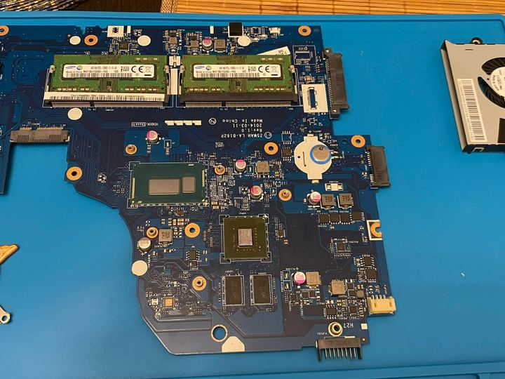
LaptopAcer Aspire E15 – SSD, RAM & Wartung
Innen- und Außenreinigung, Austausch der Wärmeleitpaste, SSD statt HDD und Erweiterung des Arbeitsspeichers.
Portfolio
Hier findest du dokumentierte Arbeiten aus Smartphone-Reparatur, Laptop-Wartung, Hardware-Upgrades, Gaming-PC-Aufbau, Performance-Tuning und Custom-Wasserkühlung.
Reparaturbeispiele
Alle alten Beispielkarten wurden entfernt. Das Portfolio zeigt jetzt echte Arbeiten von Precision Repair.

LaptopInnen- und Außenreinigung, Austausch der Wärmeleitpaste, SSD statt HDD und Erweiterung des Arbeitsspeichers.
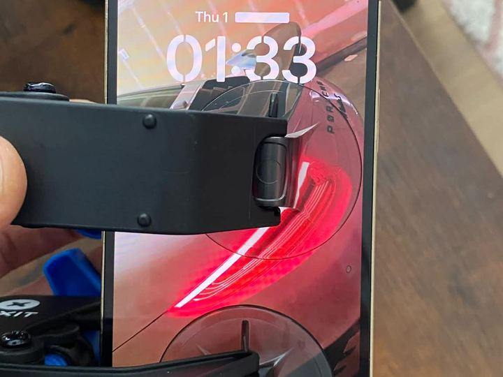
SmartphoneDisplaytausch, Akkutausch, saubere Demontage, Funktionsprüfung und Endkontrolle nach der Reparatur.
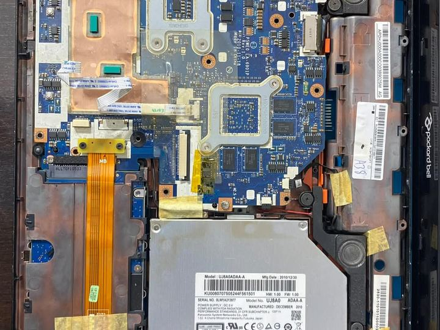
LaptopDisplay ersetzt, Gerät innen und außen gereinigt, Windows frisch installiert, Treiber und Programme eingerichtet.
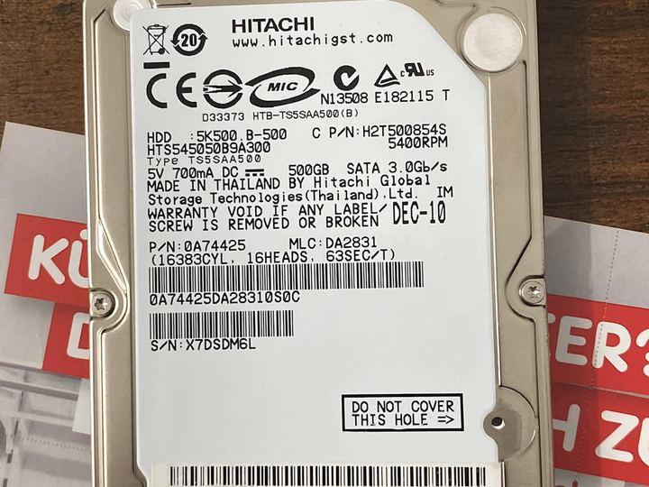
UpgradeHDD durch SSD ersetzt, RAM auf 8 GB erweitert, Kurzschluss/Fehler an der Tastatur durch intensive Reinigung behoben und Windows neu installiert.
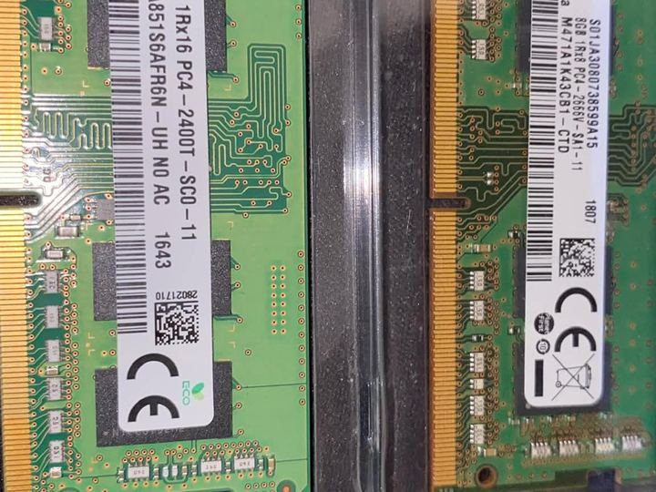
UpgradeKomplett zerlegt, gereinigt, Wärmeleitpaste erneuert, HDD gegen SSD getauscht und Arbeitsspeicher von 4 GB auf 16 GB erweitert.
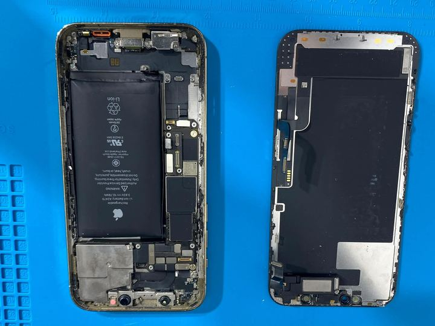
SmartphoneDefektes Display und aufgeblähter Akku ersetzt. Neues Display vor dem finalen Zusammenbau geprüft.
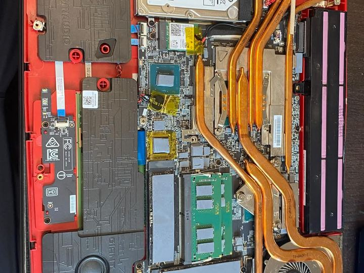
LaptopKomplett zerlegt, Kühlsystem gereinigt, Thermal Grizzly Kryonaut Extreme, neue Wärmeleitpads, 32 GB RAM, Samsung 980 Pro, Windows, Treiber und Software.
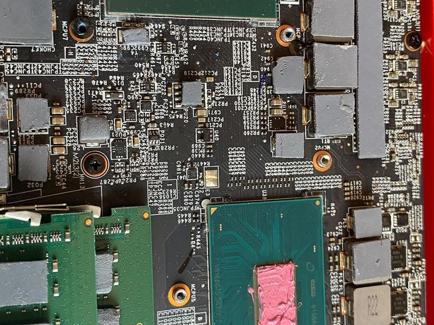
PerformanceCPU und GPU optimiert: Overclocking parallel zu Undervolting, stabilere Taktraten, spürbar mehr Leistung und deutlich niedrigere Temperaturen.
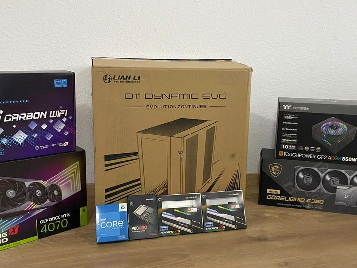
PC-BuildKompletter Gaming-PC Build mit Lian Li O11 Dynamic Evo, MSI Z690 Carbon WiFi, Intel Core i5 K-Serie, RTX 4070, DDR5, Samsung 980 Pro und 360-mm-AIO.
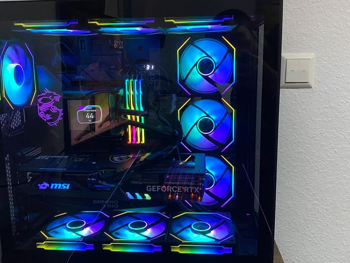
PerformanceWindows, Treiber, RGB, BIOS-Optimierung, CPU-/GPU-Undervolting, Overclocking und Stabilitätstests für mehr Leistung bei niedrigeren Temperaturen.
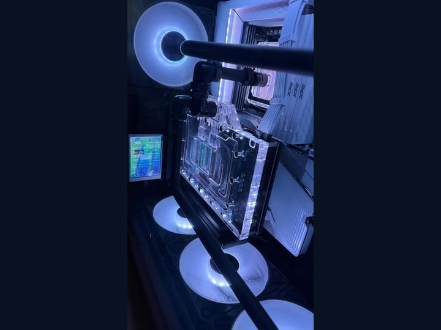
WasserkühlungPremium-Custom-Wasserkühlung mit CPU- und GPU-Block, Distroplate, Pumpe, Radiatoren, sauberer Rohrführung und abgestimmtem Schwarz-Weiß-Konzept.
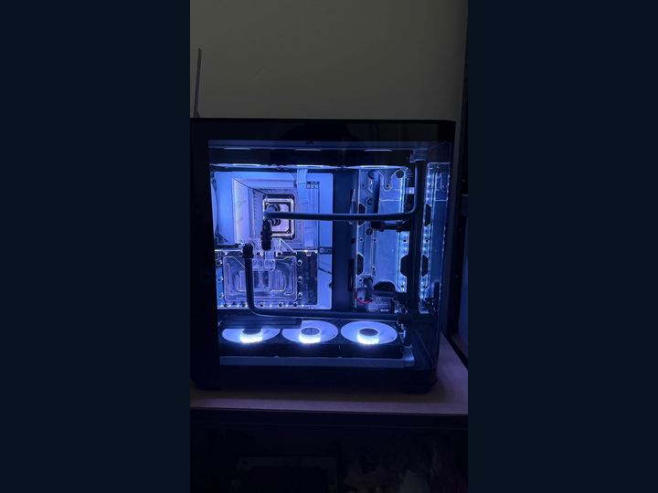
Premium BuildRyzen 7 7800X3D mit PBO/Curve Optimizer, RTX 4090 mit MSI Afterburner, 4×8 GB DDR5 von 5200 auf 6000 MT/s optimiert und Hardware-Display eingerichtet.
Dein Gerät
Telefonisch, per WhatsApp oder über das Kontaktformular.
{kind=link}
{kind=link}
{kind=link}
{kind=link}
{kind=link}
{kind=link}
{kind=link}
{kind=link}
{kind=link}
{kind=link}
{kind=link}